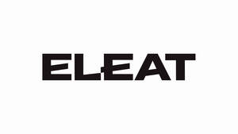

Trade Mark Journal No.2026/008 20 February 2026
UK00004335922 5 February 2026 (30)
Mark 1
ELEAT
Mark 2

- Class 30
- Breakfast cereals; Breakfast cake; Hot breakfast cereals; Cereal breakfast foods; Breakfast cereals, porridge and grits; Breakfast cereals made of rice; Breakfast cereals containing fruit; Breakfast cereals flavoured with honey; Breakfast cereals containing honey; Breakfast cereals containing fibre; Breakfast cereals containing a mixture of fruit and fibre; Cereal snacks; Muesli desserts; Meal; Snacks made from muesli; Waffles; Pancakes; Snack foods made from cereals; Oat meal; Muesli; Savoury pancakes; Croissants; Cereal-based snack food; Snack food (Cereal-based -); Snack food products made from cereals; Cereal snack foods flavoured with cheese; Coffee drinks; Oatmeal; Kasha [meal]; Cereal based prepared snack foods; Snack food products made from cereal flour; Prepared pizza meals; Porridge; Farina [meal]; Ready to eat savory snack foods made from maize meal formed by extrusion; Cereal based snack foods; Chocolate waffles; Bean meal; Muffins; Savory pancakes; Porridge oats; Snack food products made from cereal starch; Cereal-based savoury snacks; Cereal preparations consisting of oatbran; Coffee; Prepared coffee beverages; Aperitif biscuits; Pastries; Wheat meal; Snack products made of cereals; Cereal based snacks; Coffee beverages; Toasts [biscuits]; Cereals; Rice-based snack food; Snack food (Rice-based -); Toast; Crispbread snacks; Fruit cake snacks; Snacks manufactured from muesli; Coffee beverages with milk; Sopapillas [fried pastries]; Beverages made from coffee; Beverages made of coffee; Cereal-based meal replacement bars; Snack foods made from wheat; Snack foods made of wheat; Pastries with fruit; Fruit pastries; Oat porridge; Barley meal; Prepared desserts [pastries]; Rice cake snacks; Snack foods made of whole wheat; Chocolate pastries; Snack food products made from rusk flour; Quiche; Tortilla snacks; Pasta-based prepared meals; Sandwiches; Snack foods prepared from potato flour; Cereal preparations; Cereal-based snack bars; Bread biscuits; Noodle-based prepared meals; Snack food products made from rice; Snack foods prepared from maize; Toasted sandwiches; Corn meal; Okonomiyaki [Japanese savoury pancakes]; Dinner rolls; Oat-based food; English muffins; Cheeseburgers [sandwiches]; Chocolate coffee; Snack foods made from corn; Hamburger sandwiches; High-protein cereal bars; Rice snacks; Savory pastries; Rice-based snack foods; Grain-based snack foods; Maize meal; Danish pastries; Frozen pancakes; Hamburgers being cooked and contained in a bread roll; Drinks prepared from chocolate.
H2NUTRITION LTD